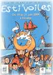
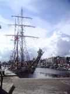
Ce festival était organisé par le club local "Atout Vent" dans le cadre des journées "Esti'Voiles" qui regroupaient aussi dans le port de Fécamp des "vieux gréements" et diverses animations basées sur les métiers de la pêche ou de la rue, et la musique puisque c'en était la fête.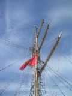
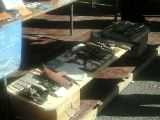
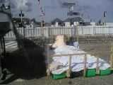
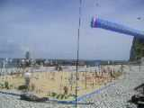
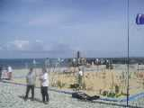
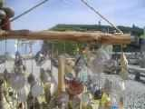
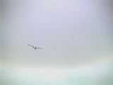
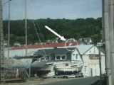
Départ en voiture, recherche dans une zone à peu près cernée, et on le retrouve... posé proprement sur le toit d'un hangar à bateaux. Après, ça ressemble à la Carte au Trésor. Un bateau qui avait vu "l'atterrissage" vient nous prendre et nous amène là où il avait rassemblé les 150 m de ficelle restante.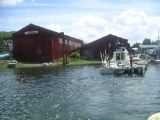
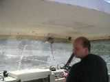
Il nous ramène ensuite aimablement au point de départ. Mais après ? Je tire sur la ficelle bêtement, elle se coupe sur une tôle ondulée rouillée.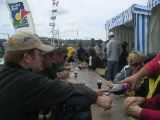
Bon, rien à faire pour le moment, on revient sur la plage, on se calme en prenant l'apéro...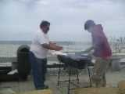
et en se régalant du barbecue généreusement préparé par Atout Vent.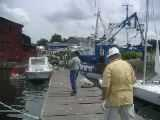
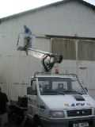
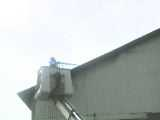
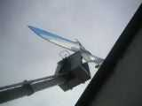
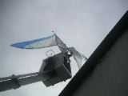
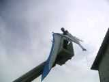
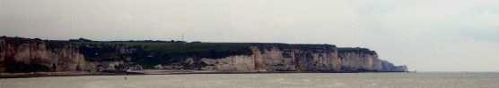